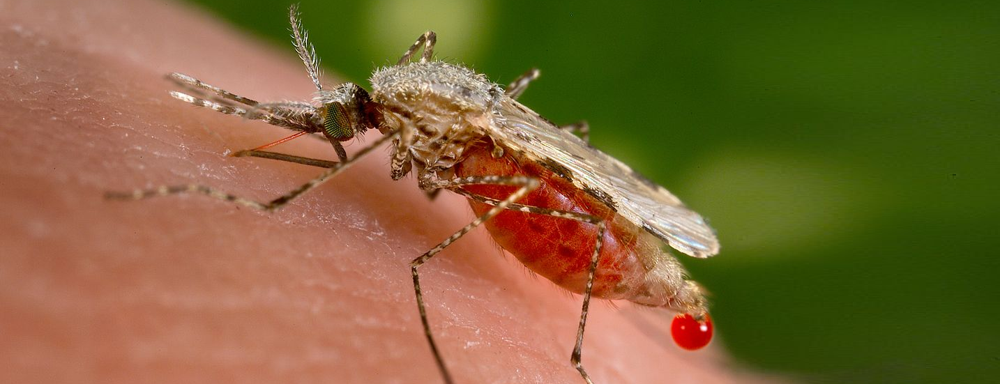

RISK: About 3.2 billion people – almost half of
the world’s population – are at risk of malaria.
INFECTION CASES: 214 million infection cases were
reported worldwide in 2015. This means a 37% global
decrease in malaria incidence between 2000 and 2015.
MORTALITY: There has been a 60% decrease in
global malaria mortality rates between 2000 and 2015.
Malaria is caused by the Plasmodium parasite and is transmitted by female Anopheles mosquitoes which bite
between dusk and dawn. People infected with malaria often experience fever, chills and flu-like illness at first.
Left untreated, the disease can lead to severe complications and, in some cases, death.

There are about 400
different species of Anopheles mosquitoes, but only 30 of these are vectors of major importance. P. falciparum and P. vivax are the most
prevalent, and P. falciparum is the most dangerous, with the highest rates of complications and mortality. This deadly form of malaria is a serious public health concern in most countries in sub-Saharan Africa.
Click here to go back to the top.
Click here to explore the map.